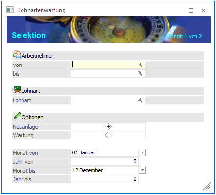
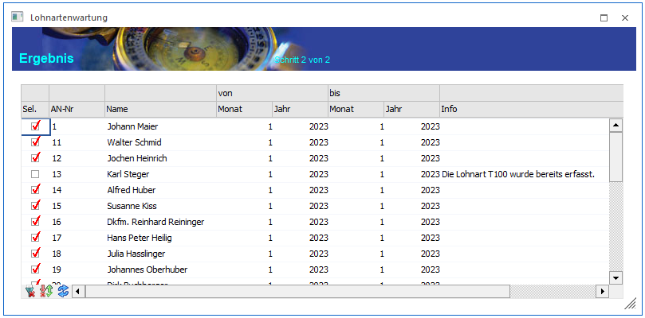

Über den Menüpunkt
1 Stammdaten
1 Arbeitnehmer
1 Lohanrtenwartung
können bestehende automatische Lohnarten gewartet oder neue automatische Lohnarten angelegt werden.
Die Lohnartenwartung wird mit Hilfe eines Assistenten durchgeführt, der durch die einzelnen Schritte leitet.
Schritt 1
Im ersten Schritt können die Grundeinstellungen vorgenommen werden:

Ø Arbeitnehmer von - bis
Hier können die Arbeitnehmer eingeschränkt werden, für die eine automatische Lohnart angelegt oder gewartet werden soll.
Ø Lohnart
Hier kann ausgewählt werden, für welche Lohnart die Neuanlage als automatische Lohnart oder Wartung einer bereits hinterlegten automatischen Lohnart, durchgeführt werden soll.
Ø Optionen
Unter Optionen kann mittels Radiobutton zwischen zwei Möglichkeiten gewählt werden:
ü Neuanlage
Es wird ein neuer Eintrag erzeugt.
ü Wartung
Ein bestehender Eintrag wird verändert.
Buttons

Ø OK
Durch Anklicken des OK-Buttons (ist erst in Schritt 3 möglich) werden die Konstanten gemäß der Anzeige in der Tabelle geändert. Dabei werden die bestehenden Gültigkeiten auf die neuen Gültigkeiten (minus 1 Monat) beschränkt, und es wird ein neuer Eintrag der Konstante mit der neuen Gültigkeit angelegt.
Ø Ende
Durch Drücken der ESC-Taste wird das Fenster geschlossen
Ø Zurück - Vor
Durch Anklicken des VOR-Buttons gelangt man in den nächsten Schritt.
Ø Filter
Durch Anklicken des Filter-Buttons kann eine erweiterte Selektion der AN vorgenommen werden, für die die Lohnartenwartung durchgeführt werden soll.
Schritt 2

Hinweis:
Inaktive AN werden hier nicht angezeigt und können auch nicht bearbeitet werden.
Folgende Felder sind ersichtlich bzw. können auch noch bearbeitet werden:
Ø Sel.
Mit dieser Checkbox wird bestimmt, ob für den Arbeitnehmer eine Veränderung oder Neuanlage betreffend der automatischen Lohnarten durchgeführt werden soll oder nicht. Ist die Checkbox aktiv, wird eine Änderung vorgenommen. Ist die Checkbox inaktiv, wird kein Eintrag erzeugt.
Ø AN-Nr.
Ø Name
In diesen 2 Feldern werden die Informationen zum Arbeitnehmer angezeigt.
Ø Von, bis, Monat, Jahr
In dieser Spalte wird der Gültigkeitszeitraum der automatischen Lohnart angezeigt, wie dieser im Arbeitnehmerstamm hinterlegt werden würde.
Ø Info
In dieser Spalte kann eine Information angezeigt werden, die dazu führt, dass für den AN nicht automatisch eine automatische Lohnart angelegt wird. Durch einen Doppelklick auf die Spalte kann auch der AN-Stamm geöffnet werden.
Buttons in der Tabelle

Ø Alle
Mit diesem Button werden alle Datensätze in der Tabelle markiert.
Ø Umkehren
Durch Anklicken des Umkehr-Buttons kann die Selektion in das Gegenteil gekehrt werden.
Ø Tabelle füllen
Durch Anklicken des Buttons kann die Tabelle neu gefüllt werden (wenn z.B. zwischenzeitlich Daten im AN-Stamm geändert wurden).
Ø Tabelleneinstellungen speichern
Die Spalten einer Tabelle können grundsätzlich an beliebige Positionen verschoben, bzw. in der Breite entsprechend angepasst werden. Durch Anwahl des Buttons "Tabelleneinstellungen speichern" werden die Einstellungen benutzerspezifisch gespeichert und bei dem nächsten Aufruf des Programmpunktes wieder vorgeschlagen.
Ø Gesamteinstellungen speichern
Im Gegensatz zu "Tabelleneinstellungen speichern" können mit "Gesamteinstellungen speichern" mehrere Tabellenaufbauten gespeichert und nach Wunsch geladen werden. Zusätzlich werden Sonderfunktionen der Tabelle (z.B. "Spalte gruppieren") ebenfalls bei der Speicherung bedacht.
Buttons
Ø OK
Durch Anklicken des OK-Buttons werden die automatischen Lohnarten gemäß der Anzeige in der Tabelle in die Arbeitnehmerstämme übernommen.